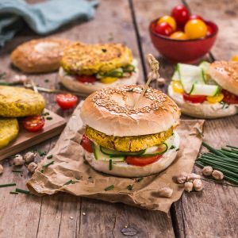

Veggie bagel

Aujourd’hui je vous retrouve avec une recette de bagel végétarien avec un steak de pois chiches et du fromage frais.
A peine les valises déposées que l’on a dû reprendre tous le deux le chemin du travail et entre les journées qui raccourcissent, les températures qui baissent et le changement d’heure, on serait bien resté en vacances quelques jours de plus (c’est faux car au fond on était bien trop heureux de récupérer nos chiens et notre chez nous!)!
Nous avons passé une semaine à Londres avec une grosse envie de tester une célèbre bakery, reine des bagels (paraît-il) mais le temps nous a manqué alors j’ai décidé que la première nouvelle recette que je publierai sur le blog serait celle de mon bagel végétarien et son steak de pois chiche réalisée quelques mois plus tôt pour le compte de la marque Vivien Paille (et approuver un bon nombre de fois derrière).
Dans ce bagel il y a (comme dans 99% des bagels) du fromage frais avec de la ciboulette, un steak de pois chiches et quelques petits légumes (ici tomate et courgette que vous pouvez changer par ceux que vous aimez ou qui sont davantage de saison). Le steak de pois chiches est très différent de celui de mon falafel burger. Ici les steaks sont très tendres à l’intérieur alors que ceux du burger sont plus compacts comme des vrais falafels. Les pains sont eux aussi fait maison avec toujours la même recette que vous pouvez trouvez ICI sauf que cette fois je n’avais pas mis de sésame dessus avant cuisson. Une fois les bagels prêts j’ai ajouté un peu de miel sur le chapeau et j’ai ajouté des graines de sésames dorées par dessus (et c’était délicieux!!)
La recette est très rapide à faire, accompagnée d’une salade d’épinards avec quelques cerneaux de noix c’est juste parfait! Je vous laisse avec la recette et je vous dis à très vite ♥
Ingrédients
- Pois chiches - 400g (cuits)
- Ail - 2 gousses
- Cumin - 1 càc
- Graines de cumin - facultatif : 1 pincée
- Bicarbonate de sodium - 1/2 càc
- Sel, poivre
- Paprika - 1 càc
- Huile d'olive - 1 càs
- Farine de maïs (ou de blé) - 2 càs (+ou-)
- Tomates cerises - 15
- Courgette - 1/2
- Fromage frais - 1 càs
- Ciboulette
Instructions
- La veille cuire les pois chiches selon les indications du paquet ou acheter des pois chiches en conserve
- Le jour J, égouttez et séchez correctement les pois chiches
- Coupez les tomates en rondelles et le concombre en lamelle à l’aide d’un économe
- Ciselez la ciboulette
- Dans le bol de votre mixeur, versez les pois chiches
- Ajoutez les épices, le sel, le poivre et le bicarbonate
- Mixez et ajoutez l’huile d’olive et la farine
- Sortez la préparation du mixeur et ajoutez-y les graines de cumin
- Mélangez et séparez la préparation en 4 boules de pâte identiques
- Formez quatre galettes et recouvrez-les légèrement de farine pour qu'elles n'accrochent pas la poêle
- Faites chauffer une poêle avec un peu d’huile d’olive et faites-y revenir vos galettes de pois chiche 3 minutes sur chaque face
- Réservez
- Tartinez chaque face des bagels avec du fromage frais
- Parsemez de ciboulette
- Ajoutez les tomates, les concombres et un filet de miel
- Déposez les steaks de pois chiche
- C’est prêt !
Les tips de la communauté
Recette brève avec un unique commentaire positif exprimant l'enthousiasme.